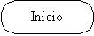
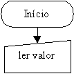
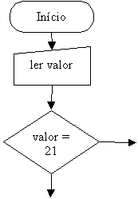
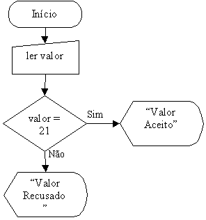
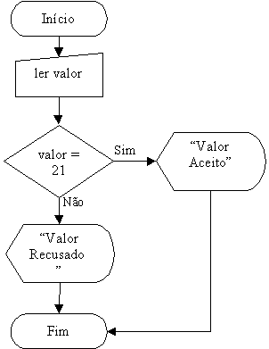

Exemplos Práticos de Construções de Lógicas e Fluxogramas
Neste exemplo será introduzida a tomada de decisão, elemento sempre presente a cada momento da nossa vida. Apesar de estar intimamente presente no nosso dia-a-dia, muitos tem dificuldades em compreender quando deverá usar as decisões na construção de lógicas de programação; a solução é simples: lembre-se que quando tomamos uma decisão temos sempre que obter um resultado lógico(Verdade ou Falsidade) e dentro deste resultado é que passaremos a nossos próximos procedimentos.
Exemplo: Se fizer sol amanhã então eu irei a praia senão ficarei em casa.
Veja que no exemplo acima nossa condicional é o trecho em azul, se esta condicional resultar em verdade(no dia seguinte fizer sol) realizarei o procedimento em vermelho(ir a praia); caso a condicional resulte em falsidade(no dia seguinte não fizer sol) realizarei o procedimento em rosa(ficar em casa).
Para usar corretamente uma decisão, somente é preciso o bom censo, pois é natural sabermos quando temos que decidir sobre algo, assim como, sempre esperamos que a decisão resulte em VERDADE ou FALSIDADE, não fazendo sentido pensar-se em uma decisão que resulte em um meio termo.
Exemplo 4:
Fazer um fluxograma para a seguinte situação: Verificar se o valor digitado pelo usuário é o número 21; caso seja, escreva "valor aceito"; caso contrário, escreva "valor recusado".
Comecemos arrumando a nossa decisão:
Se valor = 21 então escreva "valor aceito" senão escreva "valor recusado"
Onde "valor" é o valor digitado pelo usuário.
Construção do Fluxograma:
- Iniciamos o fluxograma.

- A seguir temos o valor desconhecido a ser digitados pelo usuário e atribuído à palavra valor:

- Temos agora que verificar se o valor digitado pelo usuário foi o número 21 ou não.

- Indicamos os procedimentos para os casos verdadeiro e falso.

- Finalizamos o fluxograma.

Observação: a palavra "valor" nos símbolos de entrada e de decisão, representa o valor digitado pelo usuário enquanto "Valor" nos símbolos de saída é a palavra valor(por este motivo é importante que ela esteja dentro das aspas). Nossa próxima abordagem será sobre este assunto.

| Página Anterior | Próxima Página |